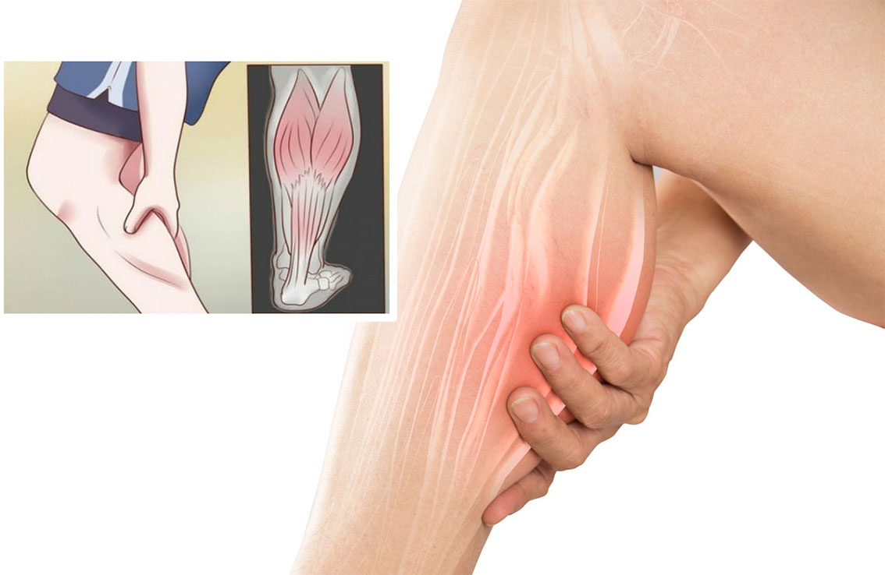

रात में पैरों की ऐंठन किन कारणों से होता है
बढ़ती उम्र के साथ पैरों के दर्द की समस्या आम हो जाती है, इसके पीछे का कारण अनियमित खानपान और अनियमित जीवनशैली है। आमतौर पर लोगों को अपने पैर का दर्द काफी नजरअंदाज मजबूरन करना पड़ता है, लेकिन रात में ये दर्द काफी गंभीर और दर्दनाक होने लगता है। जिसकी वजह से उन्हें रात में काफी परेशानी का सामना करना पड़ता है। कई लोगों के साथ ये समस्या सिर्फ रात में होती है जिसमें उनके पूरे पैर में रातभर ऐंठन और दर्द रहता है।
ये मांसपेशियों में ऐंठन ज्यादातर बछड़े और पैरों में होती है, लेकिन कभी-कभी ये आपकी जांघों को भी बुरी तरह से प्रभावित कर सकती हैं। इसका इलाज कराना बहुत जरूरी हो जाता है, नहीं तो ये आपके लिए आगे चलकर और भी ज्यादा गंभीर बन सकता है। लेकिन उससे पहले ये जानना जरूरी है कि ऐसा रात में क्यों होता है।
अल्बर्टा विश्वविद्यालय में पारिवारिक चिकित्सा के एक एसोसिएट प्रोफेसर डॉक्टर स्कॉट गैरीसन (Dr Scott Garrison, Associate Professor Of Family Medicine At The University Of Alberta) के अनुसार, सर्दियों की तुलना में गर्मियों में ये ऐंठन लोगों में काफी आम हैं। इसका कारण बताते हुए स्कॉट कहते हैं कि ये मांसपेशियों में ऐंठन तंत्रिका संबंधी मुद्दों के कारण होती है-मांसपेशियों में विकार नहीं। ज्यादा विटामिन डी के स्तर के कारण गर्मियों में तंत्रिका विकास और मरम्मत हद से ज्यादा ही सक्रिय हो सकती है। इसलिए जब आपके विटामिन डी का स्तर बढ़ता है, तो आपका शरीर प्राकृतिक मरम्मत में संलग्न हो सकता है, जो इन ऐंठन को ट्रिगर करता है।
डिहाइड्रेशन
हमारे शरीर में पानी का बहुत महत्व होता है, ज्यादातर बीमारियों का कारण और उसका इलाज पानी ही होता है। पैरों में देर रात ऐंठन होना भी डिहाइड्रेशन (Dehydration) की एक निशानी है। शरीर में सही मात्रा में पानी न होने के कारण पैरों में ऐंठन हो सकती है। ऐसा इसलिए है क्योंकि निर्जलीकरण से रक्त में इलेक्ट्रोलाइट असंतुलन हो सकता है, जिसके परिणामस्वरूप ऐंठन हो सकती है, इसलिए आपको रोजाना पर्याप्त पानी पीना चाहिए जिससे कि आप अपने पैरों के ऐंठन को दूर कर सकें।
पोषक तत्वों की कमी
भागदौड़ भरी जिंदगी के बीच अपने शरीर में पर्याप्त पोषण की पूर्ति कराना बहुत जरूरी है, नहीं तो आप कई गंभीर बीमारियों का शिकार हो सकते हैं। ऐसे ही पैरों में ऐंठन और दर्द का कारण भी पोषक तत्वों की कमी है। बहुत बार यह पोषक तत्वों की कमी होती है जो उन खतरनाक ऐंठन का कारण बनती है। किसी भी असंतुलन की जांच के लिए अपने कैल्शियम, मैग्नीशियम और पोटेशियम के स्तर की जांच जरूर करवाएं। ये आपको कई बीमारियों के खतरे से बचाने में काम कर सकता है।
अगर आप 50 साल को पार कर चुके हो तो आपको पैरों का दर्द ज्यादा सताने लगता है। यह आपकी उम्र बढ़ने के कारण होता है। 50 के दशक के शुरुआती दौर में, आप मोटर न्यूरॉन्स खोने लगते हैं और ऐंठन आपके लिए काफी आम हो जाती है। इसलिए आप सही डाइट लें और समय- समय पर डॉक्टर से संपर्क जरूर करें।
बच्चों में अस्थमा होने का बड़ा कारण मोटापा भी है
यदि आपको लगता है कि पलूशन की वजह से अस्थमा या फिर हेरिडिट्री बीमारी है तो आप गलत हैं। एक स्टडी में पता चला है कि छोटे बच्चों में मोटापा भी अस्थमा होने का एक कारण है।
शोध में पता चला है कि वही वजन हजारों बच्चों को अस्थमा जैसी बीमारियों से बचा जा सकता है। अमेरिका के डयूक विश्वविद्यालय ने अपने अध्ययन के लिए अमेरिका के पांच लाख से अधिक बच्चों के स्वास्थ्य आंकड़ों का विश्लेषण किया और पाया कि करीब एक चौथाई बच्चों (23 से 27 प्रतिशत) में मोटापा अस्थमा के लिए जिम्मेदार है।
एक अध्ययन के अनुसार 2 से 17 वर्ष के बीच के कम से कम 10 प्रतिशत बच्चों का वजर यदि नियंत्रित हो तो वे अस्थमा जैसी बीमारी की चपेट में आने से बच सकते हैं। डयूक विश्वविद्यालय के असोसिएट प्रोफेसर जेसन ई लांग का कहना है कि अस्थमा बच्चों में होने वाली क्रॉनिक बीमारियों में अहम है और बचपन में वायरल संक्रमण तथा जीन संबंधी कुछ ऐसे कारण हैं जिन्हें होने से काफी हद तक रोका जा सकता है।
प्रोफेसर कहते हैं कि बचपन में अस्थमा होने के पीछे मोटापा एकमात्र कारण हो तो उसे रोका भी जा सकता है। इससे पता चलता है कि बच्चों को किसी प्रकार की गतिविधि में लगाए रखना और उनका उचित वजन होना बहुत जरूरी है।
ओर्लेडो स्थित नेमर्स चिल्ड्रंस हॉस्पिटल में सह शोधकर्ता टेरी फिंकेल ने कहा, “पीडियाट्रिक अस्थमा बचपन की सबसे ज्यादा प्रचलित बीमारियों में से है और यह मरीज, परिवार और स्वास्थ्य तंत्र को बुरी तरह प्रभावित करती है.”
फिंकेल ने कहा, “अस्थमा के मामले कम करने के लिए कुछ रोकने योग्य जोखिम कारक हैं, लेकिन हमारे आंकड़े बताते हैं कि बच्चों में मोटापे को शुरुआत में रोकने से अस्थमा में महत्वपूर्ण कमी आएगी.”